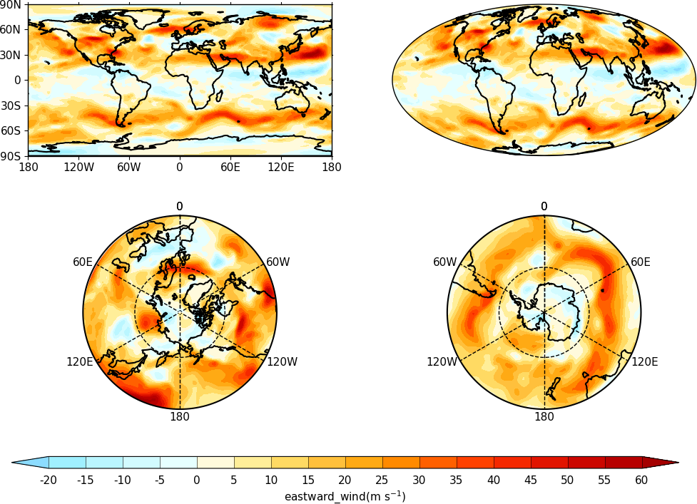
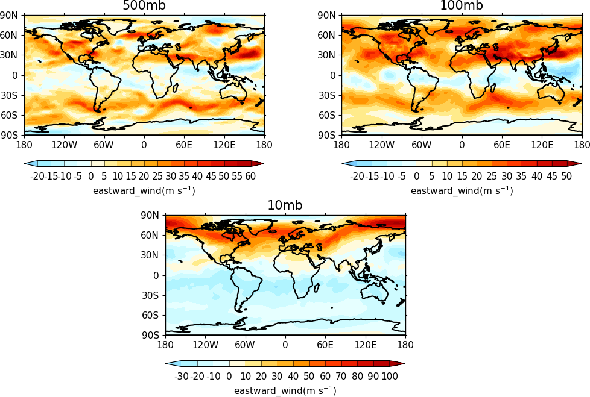
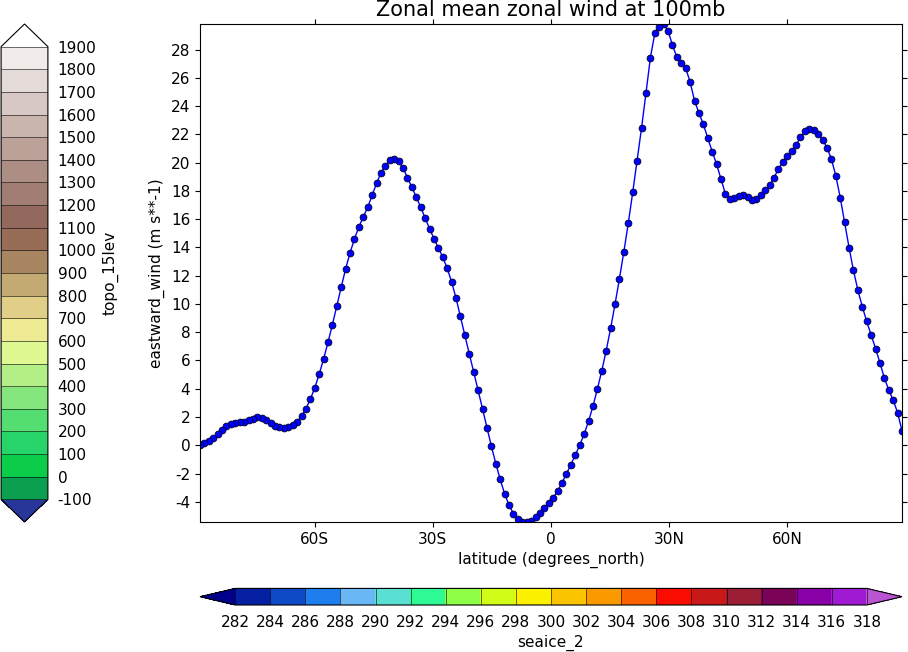

Multiple plots¶
Example 19 - multiple plots¶
Plots are arranged over rows and columns with the first plot at the top left and the last plot is the bottom right. Here the margin at the bottom of the plot is increased with the bottom parameter to gopen to accomodate a unified colorbar. The colorbars are turned off for all plots apart from the last one.
{kind=link}
import cf
import cfplot as cfp
f=cf.read('cfplot_data/ggap.nc')[1]
cfp.gopen(rows=2, columns=2, bottom=0.2)
cfp.gpos(1)
cfp.con(f.subspace(pressure=500), lines=False, colorbar=None)
cfp.gpos(2)
cfp.mapset(proj='moll')
cfp.con(f.subspace(pressure=500), lines=False, colorbar=None)
cfp.gpos(3)
cfp.mapset(proj='npstere', boundinglat=30, lon_0=180)
cfp.con(f.subspace(pressure=500), lines=False, colorbar=None)
cfp.gpos(4)
cfp.mapset(proj='spstere', boundinglat=-30, lon_0=0)
cfp.con(f.subspace(pressure=500), lines=False, colorbar_position=[0.1, 0.1, 0.8, 0.02], colorbar_orientation='horizontal')
cfp.gclose()
Example 19a - multiple plots - user specified plot positions¶
User specified plot limits are set by first specifying the user_position=True parameter to gopen and then the plot position to the gpos routines. The xmin, xmax, ymin, ymax paramenters for the plot display area are in normalised coordinates.
Cylidrical projection plots have an additional rider of having a degree in longitude and latitude being the same size so plots of this type might not fill the plot area specified as expected.
{kind=link}
import cf
import cfplot as cfp
f=cf.read('cfplot_data/ggap.nc')[1]
cfp.gopen(user_position=True)
cfp.gpos(xmin=0.1, xmax=0.5, ymin=0.55, ymax=1.0)
cfp.con(f.subspace(Z=500), title='500mb', lines=False)
cfp.gpos(xmin=0.55, xmax=0.95, ymin=0.55, ymax=1.0)
cfp.con(f.subspace(Z=100), title='100mb', lines=False)
cfp.gpos(xmin=0.3, xmax=0.7, ymin=0.1, ymax=0.55)
cfp.con(f.subspace(Z=10), title='10mb', lines=False)
cfp.gclose()
Example 19b - user specified plot position to accomodate more than one color bar¶
The plot position on the page is set manually with the user_position=True parameter to cfp.gopen and then passing the required plot size to cfp.gpos. Two calls to the cfp.cbar routine place colour bars on the plot.
{kind=link}
import cf
import cfplot as cfp
import numpy as np
f=cf.read('cfplot_data/ggap.nc')[1]
g=f.collapse('X: mean')
cfp.gopen(user_position=True)
cfp.gpos(xmin=0.2, ymin=0.2, xmax=0.8, ymax=0.8)
cfp.lineplot(g.subspace(pressure=100), marker='o', color='blue',\
title='Zonal mean zonal wind at 100mb')
cfp.cscale('seaice_2', ncols=20)
levs=np.arange(282, 320,2)
cfp.cbar(levs=levs, position=[0.2, 0.1, 0.6, 0.02], title='seaice_2')
cfp.cscale('topo_15lev', ncols=22)
levs=np.arange(-100, 2000, 100)
cfp.cbar(levs=levs, position=[0.03, 0.2, 0.04, 0.6], orientation='vertical', title='topo_15lev')
cfp.gclose()